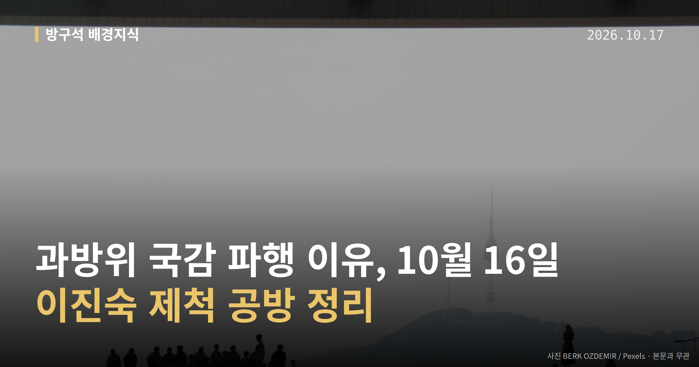
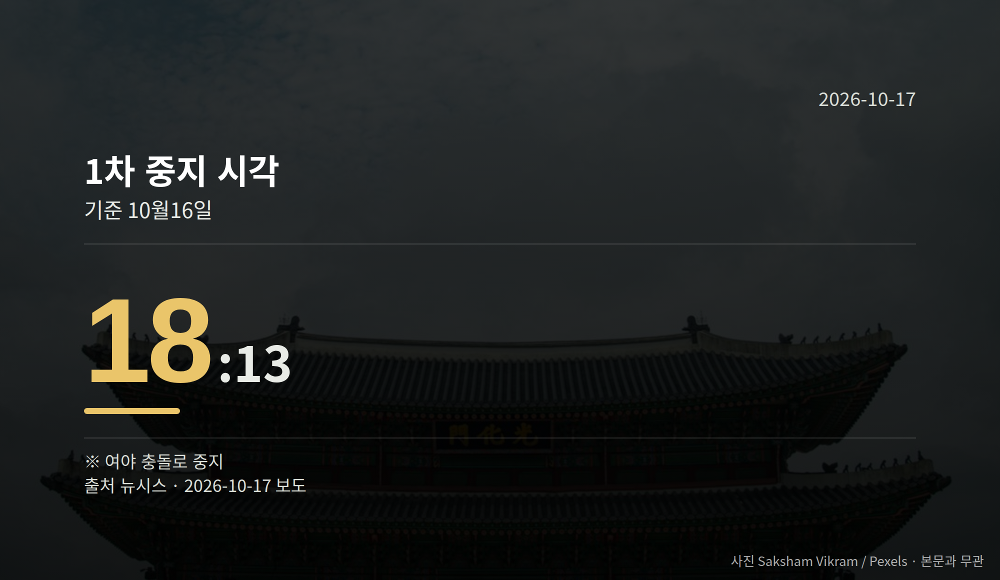

이 글은 2026년 10월 17일 기준으로 정리한 내용입니다.
10월 16일 국회 과방위 국감 파행이 있었습니다. KBS·EBS 등을 상대로 한 국정감사가 이진숙 국민의힘 의원을 감사에서 배제할지를 두고 멈춰 섰습니다.
오후에 시작된 감사는 중지를 반복하다 저녁에 멈춘 뒤, 자정 가까이 되도록 다시 열리지 못했습니다.
여기서 나온 '제척'은 이해관계가 걸린 사람을 해당 절차에서 빼는 것을 뜻합니다. 이번에는 의원을 국감 심사에서 배제하자는 의미로 쓰였습니다.
이날 감사 대상은 KBS, EBS, 방송문화진흥회, 시청자미디어재단이었습니다. 진행 경과는 시각으로 보면 이렇습니다.
| 구분 | 시각 |
|---|---|
| 개의 | 오후 2시 35분 |
| 1차 중지 | 오후 6시 13분 |
| 이 시각까지 미속개 | 오후 11시 30분 |
뉴시스 보도 기준입니다. 개의부터 1차 중지까지 약 3시간 40분이 흘렀고, 그 뒤로는 앞서 본 마지막 시각까지 감사가 재개되지 않았습니다.

더불어민주당은 이진숙 의원이 방통위원장으로 있을 때 김태규 당시 부위원장과 둘만으로 KBS·방문진 이사진을 선임한 것이 위법이며, 이해충돌에 해당하므로 제척해야 한다는 입장을 밝혔습니다.
국민의힘은 제척안이 국회 본회의 통과를 거쳐야 확정되므로 지금은 효력이 없다고 반발했습니다. 그러면서 한준호 민주당 의원에 대한 제척안을 맞제출했습니다.
이진숙 의원은 방통위 2인 체제를 만든 쪽은 민주당 주도 국회라고 반박했습니다. 민주당이 방통위원 3명 추천을 요청받고도 추천하지 않았다는 주장입니다.
여기서 유의할 점이 있습니다. 제척안이 본회의 의결까지 거쳐야 확정되는지에 대해 여야 해석이 갈려 있어, 효력 여부는 현재 자료로는 확정되지 않았습니다.
제척안의 효력을 둘러싼 해석이 정리되지 않은 탓에 국감 일정 자체가 밀리고 있습니다. 국민의힘이 맞제척안을 낸 만큼, 남은 과방위 국감에서도 같은 절차 공방이 되풀이될 여지가 남아 있습니다.
그래서 보실 지점은 두 가지입니다. 제척안이 본회의로 올라가는지, 그리고 중지된 감사가 언제 속개되는지입니다.
조희대 대법원장 탄핵 논의와 관련해 국민의힘 등 상대편 반응은 제공된 자료에서 확인되지 않았습니다.
국회의원 발의 법률안 82건. 가장 최근은 조세특례제한법 일부개정법률안(전은수의원 등 10인).
이번 주 등록된 선거 여론조사 9건
오늘 이슈에 나온 법안은 지금 어디에
열린국회정보·중앙선거여론조사심의위원회 자료를 직접 셌습니다. 여론조사의 자세한 사항은 중앙선거여론조사심의위원회 홈페이지를 참조하세요.
여러분은 국정감사에서 의원 한 명의 참여 자격을 다투는 일이, 감사 내용 자체보다 먼저 정리되어야 할 문제라고 보시나요?
댓글로 알려 주시면 다음 글에 반영하겠습니다.